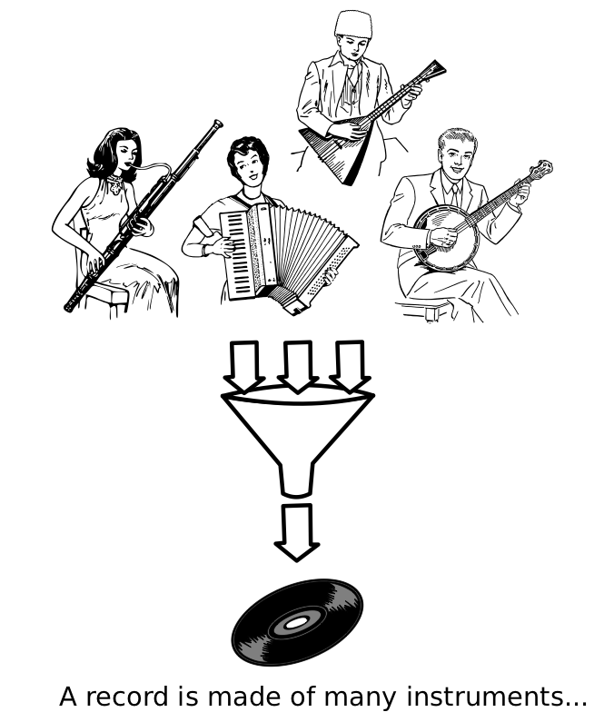
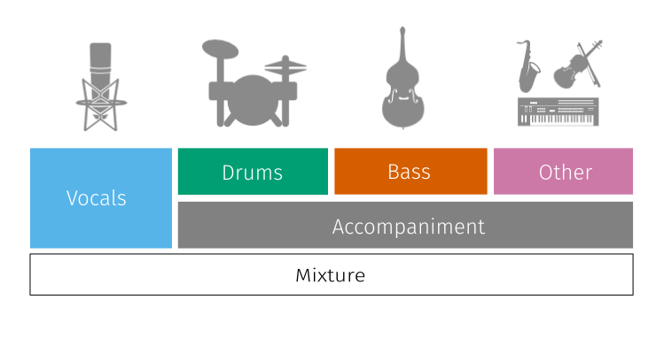
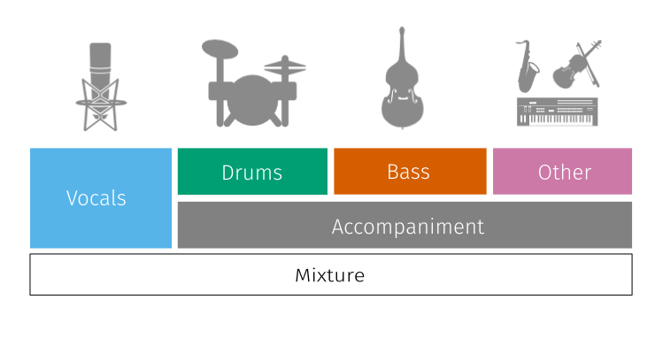

Deep Learning for Music Unmixing
fabian-robert.stoter@inria.fr
faroit
September 5th, 2018

Music Source Separation

Applications
- Automatic Karaoke
- Creative Music Production
- Personal Remixing
- Music Education
- ...
Classical Approaches
Non-negative matrix factorization (NMF)
Repetition Detection
Limitations
Paradigma shift
- when?
- why? data, separation is only well defined for certain kind of data
Datasets
| Dataset | Year | Reference(s) | Tracks | Duration | Full/stereo? |
|---|---|---|---|---|---|
| MASS | 2008 | (Vinyes 2008) | 9 | (16 7) | ❌ / ✔️ |
| MIR-1K | 2010 | (Hsu and Jang 2010) | 1,000 | (8 8) | ❌ / ❌ |
| QUASI | 2011 | (Liutkus et. al. 2011) | 5 | (206 21) | ✔️ / ✔️ |
| ccMixter | 2014 | (Liutkus et al. 2014) | 50 | (231 77) | ✔️ / ✔️ |
| MedleyDB | 2014 | (Bittner et al. 2014) | 63 | (206 121) | ✔️ / ✔️ |
| iKala | 2015 | (Chan et al. 2015) | 206 | 30 | ❌ / ❌ |
| DSD100 | 2015 | (Ono et al. 2015) | 100 | (251 60) | ✔️ / ✔️ |
| MUSDB18 | 2017 | (Rafii et al. 2017) | 150 | (236 95) | ✔️ / ✔️ |
Supervised Music Separation
Classification vs Regression

- Binary Masking
- Softmask

- Magnitude Spectrogram
Supervised Music Separation
Discriminate vs. Generative
Single I/O vs. Multiple I/O
- Siamese networks
- Chimera Networks
MUS
Vocal Extraction
Vocal Extraction
Accompaniment Extraction
Accompaniment Extraction
Drums Extraction
Drums Extraction
Bass Extraction
Bass Extraction
Other Extraction
Other Extraction
DNN Approach
SiSEC MUS at Scale
| 2007-2013 | 2015 | 2016 | 2018 | |
|---|---|---|---|---|
| Data | ? 3 min | MSD: 7 hours | DSD100: 7 hours | MUSDB18: 10 hours |
| Tools | MATLAB® | MATLAB® | MATLAB® + | + Julia |
| Evaluation | BSSEval v3 | BSSEval v4 | ||
| Submission | Manual | |||
| Results | Statistics | Reproducible Notebooks | ||
MUSDB18: 10 hours of separated music
- 100 train / 50 test tracks
- Full length stereo
- Mastered with pro. digital audio workstations
- Converted to NI STEMS
- Long-term storage on ZENODO
- https://sigsep.github.io/datasets/musdb.html
 

I/O Tools
musdb
- Parsing/Decoding stems
import musdb
def my_function(track):
'''Mix as estimate'''
# return any number of targets
estimates = {
'vocals': track.audio,
'accompaniment': track.audio,
}
return estimates
# initiate musdb
mus = musdb.DB(root_dir="./Volumes/Data/musdb")
# this might take 3 days to finish
mus.run(my_function, estimates_dir="path/to/estimates")
stempeg
docker tools
Objective Evaluation
DEMO
Website: sisec18.unmix.app

Deep Learning for Music Unmixing